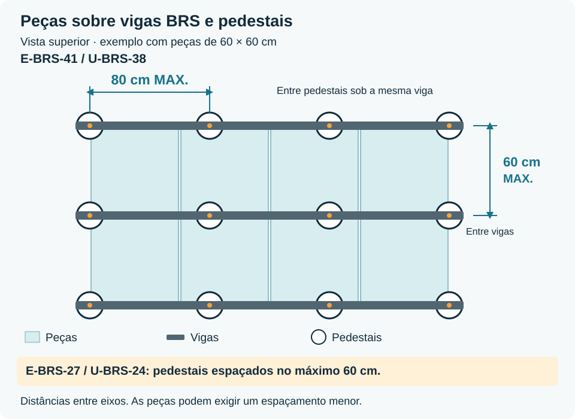

As instruções Secotech a aplicar antes, durante e depois dos trabalhos.
Edição de 17 de outubro de 2026 49 fichas práticas · Português Secotech SRL · 0498 32 49 49 · info@secotech.be
Aplicar as fichas técnicas dos produtos fornecidos e os pormenores validados da obra. Em caso de contradição, parar e pedir esclarecimentos ao gestor da obra.
Neste guia, o “gestor da obra” é o interlocutor designado pela Secotech para a obra. A equipa deve receber nome e contacto antes de começar. Mantêm-se as instruções de segurança da obra e do empreiteiro geral; os acordos comerciais adicionais dependem da Secotech.
Enviar fotografias para a pasta da obra no OPENBTP ou por WhatsApp ao gestor da obra. Indicar obra, zona, data e assunto (lote, suporte, impermeabilização, dano ou controlo final). Numa emergência ou paragem, telefonar: uma fotografia ou mensagem não basta.
112 · Emergência grave: 112. Indicar o endereço da obra, não o da sede Secotech.
Antes da colagem direta sobre gesso ou anidrite, aplicar o primário compatível prescrito. Antes de impermeabilizar, seguir a preparação específica do produto: não generalizar a dispensa de primário. Para SafetyGel sobre suportes porosos, a ficha prevê uma demão preparatória diluída com 10–20 % de água antes das duas demãos puras.
Suportes muito poeirentos ou absorventes podem exigir tratamento específico. Consultar a ficha do produto fornecido e do suporte existente.
Antes de assentar, verificar pavimentos e paredes com régua, nível de bolha ou laser. Verificar também cotas e ângulos.
Uma cola aplicada em camada fina não corrige um suporte fora de tolerância. Fotografar os defeitos antes de começar.
Ilustração · Planeza e verticalidade antes dos trabalhos
SECOTECHGuia de boas práticas · Português
11 · SuportesCrítico
Comunicação escrita de suportes não conformes
Não começar sobre um suporte não conforme. Enviar ao gestor da obra fotografias, localização exata e descrição do defeito; aguardar instruções.
O registo escrito documenta o estado inicial e permite decidir as correções antes do assentamento.
Ilustração · Comunicação escrita de suportes não conformes
30 · SuportesCrítico
Humidade: medir antes de assentar
Identificar o suporte e registar método, local e resultado. Para betonilhas de anidrite com X-GEL S1, a Litokol exige menos de 0,5% CM, ou menos de 0,3% CM com aquecimento. Usar o método de carboneto (CM) nos pontos autorizados, sem danificar os tubos. Os medidores eletrónicos localizam humidade e não substituem o ensaio CM. Para betonilhas de cimento ou outros sistemas, obter o limite aplicável antes da colocação.
Não existe um limite universal para todas as betonilhas de cimento. Seguir o fabricante e o sistema; parar se o limite for desconhecido ou ultrapassado.
Obter o registo do primeiro aquecimento e arrefecimento segundo os fabricantes do sistema e da betonilha. Verificar fissuras, humidade e juntas. Mandar desligar o aquecimento e deixar o suporte atingir a temperatura de aplicação prescrita. Respeitar juntas periféricas, de movimento e de fracionamento. Após a cura do sistema completo, reiniciar gradualmente conforme o protocolo aprovado.
O ladrilhador não altera os comandos do aquecimento. Sem protocolo ou condições validados, não iniciar e contactar o gestor da obra.
Antes de assentar, validar eixos, pontos de arranque, cortes visíveis e alinhamentos entre pavimento e paredes. Não alterar o plano sem autorização.
A verificação prévia evita cortes pequenos visíveis e juntas desalinhadas.
Ilustração · Plano de assentamento e alinhamento das juntas
SECOTECHGuia de boas práticas · Português
32 · PreparaçãoRegra Secotech
Verificação das peças e armazenamento dos produtos
Antes de assentar, verificar referência, tonalidade, calibre, quantidade e ausência de defeitos visíveis. FOTOGRAFAR SISTEMATICAMENTE as etiquetas ou as caixas de cada lote antes de começar: a referência, o código de tonalidade, o calibre e o número de lote devem estar legíveis nas fotografias. Enviar as fotografias ao gestor da obra e guardá-las no dossier da obra. Comparar várias caixas e distribuir as tonalidades segundo o aspeto aprovado. Guardar também as etiquetas dos lotes. Armazenar os sacos em local seco e os líquidos à temperatura prescrita; verificar a validade.
A fotografia é obrigatória para cada lote, em todas as obras, mesmo que as caixas pareçam iguais. Permite identificar exatamente a tonalidade para encomendas adicionais ou reparações. Não aplicar um lote duvidoso; comunicar diferenças antes de o utilizar.
Ilustração · Verificação das peças e armazenamento dos produtos
45 · PreparaçãoTolerância zero
Nunca começar uma divisão sem peças suficientes para a terminar
É estritamente proibido começar a revestir uma divisão ou um local sem verificar e confirmar que a quantidade de peças efetivamente disponível e reservada é suficiente para concluir toda a divisão, com a mesma referência, a mesma tonalidade e o calibre aprovado. Contar as peças utilizáveis e prever cortes, quebras e a reserva pedida. Uma entrega anunciada ou a esperança de poder voltar a encomendar não é suficiente. EM CASO DE DÚVIDA OU DE QUANTIDADE INSUFICIENTE: NÃO COMEÇAR. Informar o gestor da obra e aguardar a receção e a verificação da quantidade completa antes de qualquer assentamento.
Se faltarem peças e a fábrica já não produzir a mesma tonalidade, outro lote pode apresentar uma diferença de cor visível. Pode então ser necessário arrancar todo o revestimento já aplicado na divisão e recomeçar. Nunca correr este risco, nem para começar apenas uma parte do local.
Ilustração · Nunca começar uma divisão sem peças suficientes para a terminar
SECOTECHGuia de boas práticas · Português
01 · AcústicaCrítico
Bandas acústicas periféricas
Nos apartamentos, nunca cortar as bandas acústicas periféricas antes da colocação e do betumamento das juntas do revestimento cerâmico.
A banda mantém a betonilha separada das paredes e evita pontes acústicas.
Colocar os rodapés sobre pequenas calças, sem tocar no pavimento. Preencher a junta superior junto à parede com a cola de fixação dos rodapés, conforme a instrução Secotech, e remover o excesso. Retirar as calças e preencher a junta inferior com o selante flexível previsto. Nunca colocar cola na junta inferior.
A junta inferior permanece flexível para não transmitir ruídos de impacto.
Ilustração · Rodapés e junta inferior flexívelEsquema técnico · Rodapés e junta inferior flexível
SECOTECHGuia de boas práticas · Português
13 · AssentamentoRegra Secotech
Dupla colagem quando um lado atinge 60 cm
Na Secotech, aplicar dupla colagem quando pelo menos um lado mede 60 cm ou mais, incluindo 60 × 60, 30 × 60 e 30 × 120 cm. Em formatos menores, aplicar também quando o sistema ou as condições o exigirem. Levantar uma peça fresca para verificar a transferência.
Abrange quadrados e retângulos. Manter os sulcos paralelos quando ambas as faces são penteadas.
Camada de contacto no tardoz · cola penteada no suporte
Usar clipes de nivelamento quando pelo menos um lado mede 60 cm ou mais, incluindo retângulos. Para formatos menores, usar apenas por instrução específica do gestor da obra.
Os clipes reduzem desníveis, mas não corrigem um suporte irregular.
Identificar as juntas estruturais, de fracionamento, de dilatação e periféricas. Reproduzir as juntas de movimento da betonilha no revestimento, exatamente na mesma posição, sem desvio. Nunca as preencher com cola ou argamassa de juntas. Qualquer solução especial exige um pormenor técnico validado antes do assentamento.
Manter estas juntas livres e usar o perfil ou selante flexível previsto. Uma membrana de desacoplamento não permite eliminar automaticamente as juntas.
Esquema técnico · Respeitar as juntas de movimento
Confirmar a largura das juntas antes de começar, considerando as peças, tolerâncias, local de aplicação e argamassa de juntas. Usar espaçadores adequados e verificar alinhamentos. Nunca assentar peças encostadas, mesmo retificadas.
A junta não se escolhe apenas pelo aspeto. Não reduzir a largura para compensar um erro no plano de assentamento.
Espalhar apenas a área que possa ser revestida antes de a cola formar película. Pentear sulcos retos e paralelos e mover ligeiramente a peça perpendicularmente aos sulcos para os esmagar. Levantar regularmente uma peça e verificar o contacto, sobretudo nas bordas e cantos.
Retirar e substituir cola que tenha formado película. Não voltar a molhá-la nem assentar peças sobre pontos isolados de cola.
Ilustração · Cola fresca, sulcos paralelos e transferência
47 · AssentamentoCrítico
Frio, calor e sol: controlar temperaturas
Medir o ar e o suporte. X-GEL S1 e X-Color 06: +5 a +35 °C; SafetyGel: +5 a +40 °C. Para Pixel 3D, aplicar +5 a +35 °C, limite mais restritivo da ficha. Proteger de correntes de ar, sol direto e chuva. Não assentar sobre suportes gelados, sobreaquecidos ou com risco de gelo durante a cura.
Aplicam-se os limites de todo o sistema e as condições reais. Calor e vento podem criar película na cola em minutos: reduzir a área e verificar a transferência.
Aplicar duas demãos puras, contínuas, cruzadas e sem falhas. Aplicar a segunda perpendicularmente à primeira. A +23 °C e 50 % de humidade relativa, esperar pelo menos 2 horas entre demãos. A +10 °C, esperar 6 horas.
O frio, a humidade ou a ventilação insuficiente aumentam o tempo real. Verificar a secagem antes de continuar.
Fazer descer a impermeabilização da parede até à ligação com a base de duche. O retorno sobre a base deve terminar dentro da área ocupada pela junta de silicone prevista na ligação parede–base, sem avançar sobre a superfície visível ou útil da base. Executar uma ligação contínua com os produtos ou acessórios compatíveis previstos pelo sistema. Nunca terminar a impermeabilização acima da base de duche.
A junta flexível entre o revestimento e a base é apenas o acabamento visível. Não compensa uma impermeabilização interrompida ou mal ligada.
Corte técnico · ligação limitada à área da junta de silicone
SECOTECHGuia de boas práticas · Português
16 · ImpermeabilizaçãoCrítico
Passagens e ligações estanques
Tratar tubagens, ralos, cantos, ligações parede-pavimento e ligações à base de duche com os acessórios compatíveis previstos pelo sistema.
A impermeabilização deve permanecer contínua. Uma solução improvisada com silicone não substitui uma manga ou banda prescrita.
SafetyGel Litokol · aplicação a pincel à volta das tubagens
17 · ImpermeabilizaçãoCrítico
Inclinação e escoamento dos duches
Antes da impermeabilização e do assentamento, verificar a inclinação, a altura da grelha, a ligação à betonilha e a ausência de contrainclinação. Efetuar um ensaio de escoamento quando possível.
A Buildwise recomenda uma inclinação mínima de 1,5 % para o ralo, tanto na betonilha como no revestimento cerâmico.
Vista superior · cortes diagonais para um ralo central de 10 × 10 cm
Antes de assentar, verificar continuidade, consumo ou espessura necessários e secagem. Verificar cantos, passagens e ralo segundo o sistema. Fotografar os pormenores antes de ficarem ocultos. Efetuar o ensaio de estanquidade previsto apenas após o prazo e segundo o método autorizados.
Reparar todos os defeitos com uma solução compatível antes de cobrir. Não misturar acessórios de sistemas diferentes sem validação.
Ilustração · Verificar a impermeabilização antes de a cobrir
03 · AcabamentosNormal
Junta junto ao perfil metálico
Deixar uma junta regular entre a peça cerâmica e o perfil metálico. Preenchê-la totalmente com a argamassa de juntas prevista. Nunca encostar a peça diretamente ao metal.
A junta evita o contacto direto, protege a aresta da peça e garante um acabamento uniforme.
Correto · junta preenchida entre peça e perfilProibido · peça encostada diretamente ao perfil
SECOTECHGuia de boas práticas · Português
04 · AcabamentosNormal
Cortes a 45° nos cantos exteriores dos rodapés
Nos cantos exteriores, executar dois cortes limpos a 45° e unir os rodapés em meia-esquadria, salvo se o desenho prever um perfil ou uma peça especial de acabamento.
O canto deve ficar fechado, alinhado e sem arestas em bruto visíveis.
Acabamento real · canto exterior em meia-esquadriaVista superior · dois cortes a 45°
21 · AcabamentosRegra Secotech
Todos os furos com serra-copo circular
Todos os furos nas peças cerâmicas devem ser executados com uma serra-copo circular diamantada, adequada ao material e ao diâmetro necessário. São proibidas aberturas quadradas feitas com rebarbadora, mesmo que depois fiquem escondidas por um espelho de acabamento ou equipamento. Os furos devem ser regulares, centrados e sem lascas visíveis.
Um furo circular limpo limita o início de fissuras e as aberturas demasiado grandes. Nunca disfarçar um recorte quadrado ou defeituoso com silicone.
Permitido: furo redondo com serra-copo diamantada. Proibido: furo quadrado com rebarbadora.
SECOTECHGuia de boas práticas · Português
36 · AcabamentosCrítico
Juntas flexíveis limpas e contínuas
Preparar faces de aderência limpas e secas. Usar um selante compatível com os materiais e a utilização, com primário e cordão de fundo de junta quando prescritos. Respeitar a geometria e profundidade previstas, alisar sem depressões e proteger até ao endurecimento.
O selante deve poder deformar-se. Uma junta flexível de acabamento nunca substitui a impermeabilização sob o revestimento.
Ilustração · Juntas flexíveis limpas e contínuas
51 · AcabamentosRegra Secotech
Controlo final e fotografias antes da saída
Antes de sair, controlar juntas, bordos, rodapés, cortes, ligações e limpeza, sem defeitos visíveis. Fotografar vistas gerais e detalhes, identificar pendências e proteções deixadas. Enviar por OPENBTP ou WhatsApp ao gestor da obra com obra, zona e data. Comunicar prazos de utilização e pedir o controlo final.
A saída da equipa não é a receção dos trabalhos. Acompanhar e resolver pendências conforme as instruções do gestor da obra.
SECOTECHGuia de boas práticas · Português
07 · ProdutosCrítico
Preparação de X-GEL S1
Para um saco cinzento de 20 kg, usar 6,0 a 6,6 litros de água. Para um saco branco de 20 kg, usar 6,2 a 6,8 litros. Verter a água medida, adicionar gradualmente o pó e misturar até obter uma pasta homogénea. Esperar 5 minutos e voltar a misturar brevemente.
São necessárias duas misturas. Nunca adicionar água depois de a pasta começar a fazer presa.
Espalhar X-GEL S1 no suporte com uma talocha dentada adequada ao formato da peça e ao suporte. Manter sulcos retos e paralelos. Assentar a peça na cola ainda fresca e levantar regularmente uma peça para verificar a transferência e ajustar o método se necessário.
A pasta permanece utilizável durante 6 a 8 horas e o tempo aberto ultrapassa 40 minutos apenas nas condições de referência.
Colocar os pedestais sobre um suporte estável, rígido e com capacidade de carga suficiente. Limpar a superfície, verificar o escoamento sob o terraço e preservar a membrana de impermeabilização. Prever proteções compatíveis com o suporte.
O espaço sob as lajetas não substitui a drenagem do suporte. A ficha PB limita a utilização a peões, sem veículos nem equipamentos vibratórios.
Escolher cada pedestal dentro do seu intervalo de regulação. Se a cota final tiver de compensar a inclinação do suporte, usar o corretor compatível previsto. Colocar espaçadores correspondentes à junta escolhida e amortecedores adequados. Verificar o nível e o apoio de cada lajeta.
As juntas ficam abertas para deixar passar a água. Todos os pedestais devem apoiar firmemente e nenhuma lajeta pode oscilar à passagem.
Ilustração · Regular os pedestais e manter as juntas abertas
Prever os acessórios de bordo do sistema. Junto a uma parede, o U-WALL-PP mantém uma folga de 5 mm. Para cortes periféricos de 2 a 14 cm, a Buzon propõe o U-EDGE com a interface de fixação adequada ao pedestal.
As peças cortadas devem estar apoiadas e retidas. Usar espaçadores e amortecedores compatíveis; nunca deixar uma peça pequena em equilíbrio instável.
U-WALL-PP montado num pedestal · fotografia oficial Buzon
Respeitar a disposição dos apoios nos cantos, nos lados e no centro segundo o formato. Os esquemas abaixo reproduzem as posições recomendadas pela Buzon para os formatos apresentados.
Contar os pedestais no plano completo do terraço, considerando apoios partilhados, bordaduras e cortes.
Cada círculo representa um apoio sob a lajeta. Os apoios de bordo e de canto podem ser partilhados: não multiplicar simplesmente estes números pelo número de lajetas.
40 × 40 cm 4 apoios
4 cantos
50 × 50 cm 4 apoios
4 cantos
60 × 60 cm 4 apoios
4 cantos
75 × 75 cm 5 apoios
4 cantos + centro
80 × 80 cm 5 apoios
4 cantos + centro
90 × 90 cm 9 apoios
4 cantos + 4 pontos médios dos lados + centro
100 × 100 cm 9 apoios
4 cantos + 4 pontos médios dos lados + centro
120 × 30 cm 6 apoios
4 cantos + ponto médio dos 2 lados maiores
120 × 40 cm 6 apoios
4 cantos + ponto médio dos 2 lados maiores
120 × 60 cm 6 apoios
4 cantos + ponto médio dos 2 lados maiores
90 × 45 cm 6 apoios
4 cantos + ponto médio dos 2 lados maiores
Posições do catálogo Buzon PB 2025, p. 105, para instalação direta sobre pedestais. O fabricante das lajetas e as condições da obra podem exigir apoios adicionais. Confirmar os formatos não apresentados e as disposições desencontradas.
Com E-BRS-41 ou U-BRS-38: no máximo 80 cm entre os eixos dos pedestais sob a mesma viga. Com E-BRS-27 ou U-BRS-24: no máximo 60 cm. Entre os eixos de duas vigas: no máximo 60 cm, a reduzir conforme o formato, a resistência das peças e as prescrições do fabricante. Não confundir estes dois espaçamentos.
Medir as distâncias de eixo a eixo. O perfil da viga e o formato das peças determinam os apoios necessários.

Esquema BRS · máximo 80 cm entre pedestais nos perfis altos e 60 cm entre vigas
A proteção do revestimento terminado não é um trabalho sistemático: realizá-la APENAS A PEDIDO EXPRESSO DOS GESTORES DA OBRA. Após esse pedido e depois de endurecimento suficiente, aplicar a proteção prevista contra impactos, riscos, poeiras abrasivas e passagem de outras empresas.
Confirmar a zona e o tipo de proteção pedidos. Utilizar uma proteção limpa, adequada e que não manche; verificar a compatibilidade dos adesivos. Desenrolar a proteção sobre o pavimento ainda descoberto, sem voltar a cobrir uma zona já protegida.
Proteção a pedido expresso dos gestores · desenrolar sobre o pavimento descoberto
24 · ProteçãoCrítico
Proteger a base de duche antes dos trabalhos
Antes da impermeabilização ou do assentamento, limpar cuidadosamente a base de duche. Colocar cartão de proteção limpo, cortado à medida, e fixá-lo com fita adesiva compatível que não deixe resíduos. Só começar depois de colocar esta proteção.
O cartão fixo protege a base contra riscos, impactos, ferramentas, cola e resíduos de impermeabilização durante toda a intervenção.
Limpar · ajustar o cartão · fixar a proteção
SECOTECHGuia de boas práticas · Português
37 · ProteçãoCrítico
Prazos antes de circular e usar água
Manter a zona vedada durante os prazos do sistema. X-GEL S1 a +23 °C e 50% HR: juntas na parede após 6–8 h, no chão após 12 h, circulação após 12 h e utilização após 5 dias. X-Color 06: circulação após 24 h e utilização após 7 dias. Pixel 3D a +23 °C: circulação após 24 h e utilização após 5 dias.
O duche só pode ser usado após cura completa de todos os componentes. Aplicar o prazo mais longo, adaptado às condições reais. Ver tabela; película seca do selante não significa cura em profundidade.
Ilustração · Prazos antes de circular e usar água
38 · ProteçãoCrítico
Limpeza final adequada ao revestimento
Usar um produto e método compatíveis com a cerâmica, juntas, pedras e perfis. Fazer um ensaio discreto, respeitar a diluição e o enxaguamento e retirar os resíduos. Proteger os elementos sensíveis durante a operação.
Não usar ácido em pedra calcária nem produtos agressivos sem verificar a compatibilidade. Não despejar água com cola ou cimento nos esgotos.
Ilustração · Limpeza final adequada ao revestimento
SECOTECHGuia de boas práticas · Português
39 · SegurançaCrítico
Cortes: reduzir as poeiras de sílica
Privilegiar cortes manuais adequados, corte com água usando uma ferramenta prevista para tal ou captação na origem. Isolar o posto e proteger os outros trabalhadores. Aspirar com equipamento adequado a poeiras perigosas ou limpar a húmido; não varrer a seco nem usar ar comprimido.
Cortar no exterior não elimina, por si só, o risco. Complementar as proteções coletivas com a proteção respiratória prescrita para a tarefa.
Equipamentos, ferramentas e movimentação de cargas
Usar proteções adequadas: calçado de segurança, óculos, proteção auditiva, luvas compatíveis com a tarefa e joelheiras. Verificar ferramentas, discos, resguardos e cabos; desligar da alimentação antes de trocar acessórios. Para lajetas grandes, usar auxiliares de movimentação adequados e trabalhar em equipa quando necessário.
Retirar de serviço qualquer ferramenta defeituosa. Proteger os cabos da água e nunca retirar um resguardo para facilitar um corte.
Ilustração · Equipamentos, ferramentas e movimentação de cargas
SECOTECHGuia de boas práticas · Português
48 · SegurançaTolerância zero
Acolhimento de segurança, PSS e proteção
Realizar o acolhimento de segurança e ler o plano de segurança e saúde (PSS): acessos, evacuação, socorro e riscos. Em altura, usar equipamento autorizado, estável e inspecionado; sem apoios improvisados ou escadas inadequadas. Colas e juntas cimentícias são alcalinas: usar luvas e óculos adequados e seguir a FDS. Em caso de projeção, lavar imediatamente com água abundante, avisar o socorrista e seguir a FDS. Álcool e drogas proibidos durante o trabalho; não trabalhar com capacidades alteradas.
Se faltarem acolhimento, proteção ou condições seguras, parar e informar o gestor da obra. Dar prioridade às proteções coletivas.
Parar e tornar o local seguro sem se pôr em perigo. Numa emergência grave, ligar 112 sem esperar pela Secotech: indicar endereço exato, acesso, tipo de acidente e número de vítimas. Seguir o operador e avisar o socorrista. Mandar orientar os socorros e libertar o acesso. Depois informar o gestor da obra e a Secotech pelo +32 498 32 49 49.
Comunicar também quase-acidentes e registar os factos no OPENBTP ou WhatsApp. Nunca atrasar o socorro para tirar fotografias. Retomar apenas após eliminar o perigo e obter acordo do gestor da obra.
Nunca urinar numa garrafa ou recipiente. Nunca utilizar os equipamentos sanitários do edifício em construção. Utilizar exclusivamente os sanitários de obra destinados a esse fim.
Comunicar imediatamente ao gestor da obra qualquer problema de acesso ou manutenção.
Garrafas e sanitários do edifício proibidos · usar sanitários de obra
19 · Organização da obraCrítico
Arrumação diária das zonas de trabalho
No final de cada dia, arrumar e limpar todas as zonas de trabalho. Retirar resíduos, baldes e embalagens vazias; limpar cola, lama, poeiras e água e guardar ferramentas e materiais na zona prevista.
Passagens, acessos e saídas devem permanecer limpos, desimpedidos e seguros para as outras equipas e para o trabalho do dia seguinte.
Remover resíduos · limpar e arrumar · manter passagens livres
SECOTECHGuia de boas práticas · Português
20 · Organização da obraTolerância zero
Comunicar imediatamente danos e erros
Comunicar imediatamente qualquer dano, erro, quebra, fuga ou estrago noutro trabalho, com fotografias e localização exata. Não esconder o problema nem continuar sem instruções.
Uma comunicação rápida limita as reparações e os custos.
Constatar · fotografar · localizar · parar e comunicar
22 · Organização da obraCrítico
Separação e remoção de resíduos
Separar resíduos inertes, cartão e resíduos indiferenciados nos contentores ou zonas previstos. Empilhar as sobras de cerâmica na horizontal, de forma estável, numa palete própria. Remover regularmente cada categoria sem as misturar e proteger os resíduos armazenados da chuva.
A separação facilita a eliminação adequada, evita a contaminação entre fluxos e impede que embalagens molhadas sujem a obra.
Cartão · sobras de cerâmica na horizontal · resíduos indiferenciados e plásticos
SECOTECHGuia de boas práticas · Português
23 · Organização da obraCrítico
Cortar no exterior após o início dos acabamentos
A partir do início dos trabalhos de pintura ou da instalação de carpintarias e caixilharias, deixar de cortar com rebarbadora no interior. Instalar o posto de corte no exterior, na zona autorizada, e limpar as poeiras e resíduos produzidos.
As poeiras abrasivas de corte danificam pinturas, carpintarias, caixilharias, vidros e trabalhos concluídos.
Proibido cortar no interior após o início dos acabamentos · posto no exterior
41 · Organização da obraRegra Secotech
Horários, vizinhança e proibição de fumar
Respeitar os horários e as zonas de trabalho autorizados. Avisar o gestor da obra antes de trabalhos ruidosos ou poeirentos e coordenar as passagens com as outras equipas. Regra Secotech: não fumar nem usar cigarros eletrónicos dentro dos edifícios; utilizar apenas a zona exterior autorizada.
Respeitar os ocupantes e os seus bens. Manter acessos e saídas livres e comunicar imediatamente situações perigosas.
Ilustração · Horários, vizinhança e proibição de fumar
SECOTECHGuia de boas práticas · Português
44 · Organização da obraTolerância zero
Nunca despejar os baldes de limpeza nos escoamentos
É proibido despejar os baldes de limpeza da cola ou da argamassa de juntas num lava-loiça, lavatório, sanita, duche, ralo de pavimento ou sarjeta da rua destinada às águas pluviais. Recolher a água suja num recipiente estanque e deixar decantar. Colocar apenas os resíduos solidificados no contentor de resíduos minerais previsto, segundo as instruções do gestor da obra. Manter a água restante no recipiente até ao tratamento ou à recolha autorizada.
Os resíduos podem endurecer e obstruir as canalizações. Mesmo após a decantação, a água restante não deve ser despejada numa descarga sem instrução expressa do gestor da obra.
Proibido: água suja na sarjeta · resíduos solidificados no contentor de resíduos minerais, água líquida guardada à parte
50 · Organização da obraRegra Secotech
Trabalhos adicionais e medições
Nenhum trabalho adicional sem acordo escrito prévio da Secotech com zona, prestação e condições. Perante imprevistos, tornar seguro e pedir instruções escritas. Medir por zona e rubrica segundo as normas de medição aplicáveis e os documentos do contrato, identificando regras para vãos, deduções e acessórios. Enviar os levantamentos para verificação antes da faturação.
Tratar quantidades, vãos, acessórios e desperdícios segundo as regras de medição do contrato. Esclarecer qualquer ambiguidade por escrito antes da execução.
Dados de referência Litokol: +23 °C e 50% HR, salvo indicação contrária. Adaptar às condições reais e à ficha do produto entregue. Os tempos somam-se entre etapas sucessivas; todos os componentes devem estar prontos para utilização.
Produto
Água / preparação
Tempo de trabalho
Antes da etapa seguinte
Circulação
Utilização
Aplicação
X-GEL S1
Cinza: 6,0–6,6 L / 20 kg. Branco: 6,2–6,8 L / 20 kg. Repouso 5 min.
Pasta: 6–8 h. Tempo aberto > 40 min.
Juntas: parede 6–8 h; chão 12 h.
12 h
5 dias; piscinas 14 dias.
+5 a +35 °C
SafetyGel
Pronto a usar; camadas puras após preparação.
Esperar pela secagem completa entre camadas.
Entre camadas E antes de assentar: 2 h; a +10 °C: 6 h.
Membrana a revestir; sem circulação direta.
A utilização depende do sistema completo.
+5 a +40 °C
X-Color 06
5,6–6,0 L / 20 kg (28–30%).
Pasta: cerca de 40 min.
Limpeza com esponja: cerca de 20–25 min; verificar a presa.
24 h
7 dias; piscinas 14 dias.
+5 a +35 °C
Pixel 3D
Pronto a usar; não adicionar água.
Película: cerca de 15 min.
Cura em profundidade: cerca de 2–3 mm / 24 h.
24 h a +23 °C
5 dias a +23 °C.
Aplicar +5 a +35 °C; ideal +15 a +25 °C.
No duche, esperar pela cura completa da impermeabilização, cola, juntas e selante. A formação de película não permite usar água. Confirmar o prazo do sistema completo.
Confirmo que recebi e compreendi esta edição e as instruções da obra. Sei quem contactar e pedirei esclarecimentos em caso de dúvida. A assinatura não substitui o acolhimento de segurança, a formação nem a receção dos trabalhos.